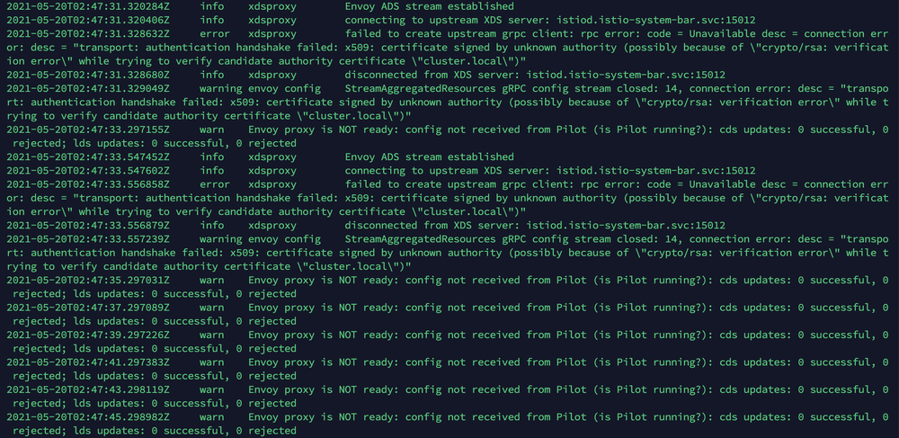
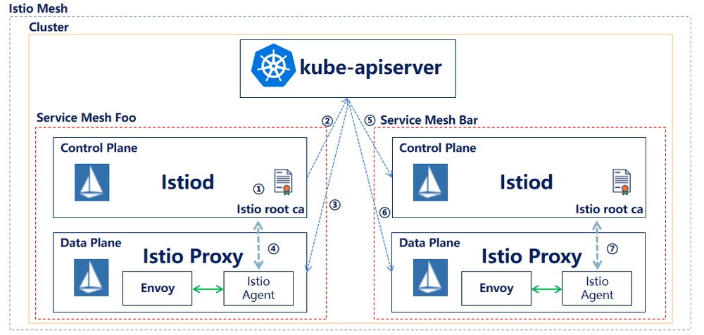
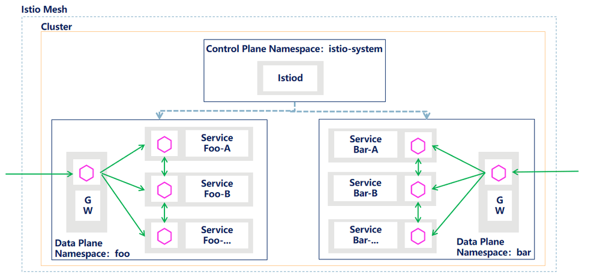

<!DOCTYPE html>

<html lang="zh-cn"><head>
  <meta charset="utf-8">
  
  <title>多租户场景下 Istio 部署方案探索 | 云原生社区</title>
  

  <!-- mobile responsive meta -->
  <meta name="viewport" content="width=device-width, initial-scale=1, maximum-scale=1">
  <meta name="description" content="Istio 作为服务治理的主流技术，应用的越来越多。在将 Istio 落地部署的时候，需要考虑公司组织结构、产品、网络、人员等多种场景因素，确定合适的部署方案。我们需要在一个 Kubernetes 集群中通过 Istio 纳管多款产品，针对该需求，对 Istio 部署模型进行了一些调研探索，确定了适合的的部署模式，记录下来，为有相同需要的伙伴提供参考。">
  
  <meta name="author" content=" 云原生社区">
  <meta name="generator" content="Hugo 0.65.3" />

  <!-- plugins -->
  
  <link rel="stylesheet" href="/plugins/bootstrap/bootstrap.min.css">
  
  <link rel="stylesheet" href="/plugins/slick/slick.css">
  
  <link rel="stylesheet" href="/plugins/fontawesome/all.css">
  
  <link rel="stylesheet" href="/plugins/animate/animate.css">
  
  <link rel="stylesheet" href="/plugins/venobox/venobox.css">
  

  <!-- Main Stylesheet -->
  
  <link rel="stylesheet" href="/scss/style.min.css" media="screen">

  <!--Favicon-->
  <link rel="shortcut icon" href="/images/favicon.png " type="image/x-icon">
  <link rel="icon" href="/images/favicon.png " type="image/x-icon">
  <meta property="og:image" content="https://cloudnative.to/images/favicon.png">
  <!--Algolia-->
  <link rel="stylesheet" href="https://cdn.jsdelivr.net/npm/docsearch.js@2.6.3/dist/cdn/docsearch.min.css">
  <!--Twitter card-->
  <meta name="twitter:card" content="summary_large_image" />
  <meta name="twitter:site" content="Cloud Native Community|云原生社区" />
  <meta name="twitter:creator" content="@CloudNativeCN" />
  <meta property="og:url" content="https://cloudnative.to/blog/istio-multi-tenancy-exploration/" />
  <meta property="og:title" content="多租户场景下 Istio 部署方案探索" />
  <meta property="og:description" content="Istio 作为服务治理的主流技术，应用的越来越多。在将 Istio 落地部署的时候，需要考虑公司组织结构、产品、网络、人员等多种场景因素，确定合适的部署方案。我们需要在一个 Kubernetes 集群中通过 Istio 纳管多款产品，针对该需求，对 Istio 部署模型进行了一些调研探索，确定了适合的的部署模式，记录下来，为有相同需要的伙伴提供参考。" />
  <meta property="og:image" content="https://cloudnative.to/images/blog/daluis-gorge.jpg" />
</head>
<body>
<!-- header -->


<div style='margin:0 auto;width:0px;height:0px;overflow:hidden;'>
     
</div>
<header>
  

  <!-- navigation -->
  <div class="navigation bg-white position-relative">
    <div class="container">
      <nav class="navbar navbar-expand-lg navbar-light bg-white">
        <a class="navbar-brand" href="/"></a>
        <button class="navbar-toggler border-0" type="button" data-toggle="collapse" data-target="#navigation"
          aria-controls="navigation" aria-expanded="false" aria-label="Toggle navigation">
          <span class="navbar-toggler-icon"></span>
        </button>

        <div class="collapse navbar-collapse text-center" id="navigation">
          <ul class="navbar-nav ml-auto">
            <li class="nav-item">
              <a class="nav-link" href="/"></a>
            </li>
            
            
            <li class="nav-item">
              <a class="nav-link" href="/blog/">博客</a>
            </li>
            
            
            
            <li class="nav-item">
              <a class="nav-link" href="/community/sig/">兴趣小组</a>
            </li>
            
            
            
            <li class="nav-item">
              <a class="nav-link" href="/contribute">投稿</a>
            </li>
            
            
            
            <li class="nav-item">
              <a class="nav-link" href="/job">招聘</a>
            </li>
            
            
            
            <li class="nav-item dropdown">
              <a class="nav-link dropdown-toggle" href="#" role="button" data-toggle="dropdown" aria-haspopup="true"
                aria-expanded="false">
                社区
              </a>
              <div class="dropdown-menu" >
                
                <a class="dropdown-item" href="/team">管理委员会</a>
                
                <a class="dropdown-item" href="/academy/">云原生学院</a>
                
                <a class="dropdown-item" href="/city">城市站</a>
                
                <a class="dropdown-item" href="/community/">社区资料</a>
                
              </div>
            </li>
            
            
            
            <li class="nav-item dropdown">
              <a class="nav-link dropdown-toggle" href="#" role="button" data-toggle="dropdown" aria-haspopup="true"
                aria-expanded="false">
                资料
              </a>
              <div class="dropdown-menu" >
                
                <a class="dropdown-item" href="http://landscape.opensourcecloud.cn/">云原生生态图景</a>
                
                <a class="dropdown-item" href="/kubebuilder">Kubebuilder 中文文档</a>
                
                <a class="dropdown-item" href="/envoy">Envoy 中文文档</a>
                
                <a class="dropdown-item" href="https://istio.io/latest/zh/">Istio 中文文档</a>
                
              </div>
            </li>
            
            
          </ul>

          
          

          
          
          <!-- get start btn -->
          <a href="/contact" class="btn btn-primary hover-ripple">加入我们</a>
          
        </div>
      </nav>
    </div>
  </div>
  <!-- /navigation -->
</header>
<!-- /header -->

	<!-- page title -->
<section class="section bg-cover overlay" style="background-image: url('/'),url('/'),url('/images/backgrounds/page-title-5.jpg');">
  <div class="container">
    <div class="row">
      <div class="col-12">
        <h2 class="text-white mb-3">多租户场景下 Istio 部署方案探索</h2>
        <!-- breadcrumb -->
        
        <p class="text-white">Istio 作为服务治理的主流技术，应用的越来越多。在将 Istio 落地部署的时候，需要考虑公司组织结构、产品、网络、人员等多种场景因素，确定合适的部署方案。我们需要在一个 Kubernetes 集群中通过 Istio 纳管多款产品，针对该需求，对 Istio 部署模型进行了一些调研探索，确定了适合的的部署模式，记录下来，为有相同需要的伙伴提供参考。</p>
      </div>
    </div>
  </div>
</section>
<!-- /page title -->

	

<!-- blog details -->
<section class="section">
  <div class="container blog">
    <div class="row">
      <div class="col-lg-8">
        <!-- post thumb -->
        <div class="position-relative mb-5">
          
           <div class="card-type"><a href="/categories/istio">Istio</a></div>
        </div>
        <div class="card-meta mb-2">作者  <strong class="text-dark"><a href="https://github.com/zhanghw0354">张海文</a></strong>
          
            发表于 <strong class="text-dark">2021年11月1日</strong></div>
        <hr>
        <div class="content">
          <h2 id="背景">背景</h2>
<p>随着云原生概念的普及，服务网格技术的流行以及 Istio 的成熟，使用Istio 进行服务治理的实践也越来越多，正成为服务治理的趋势。</p>
<p>在这样的背景下，我们也加入到 Istio 的研究中，希望初期通过 Istio 实现公司产品迭代版本的灰度发布，后续基于 Istio 为业务产品提供更多的流量管理及观测追踪能力。</p>
<p>一开始设计 Istio 部署方案时，基于当时对公司产品部署方式的了解，每款产品独占一套 Kubernetes 集群，另外考虑到当时我们对 Istio 的熟悉程度，设计的是最基础的方案：一套 Kubernetes 集群中部署一套 Istio，将该 Kubernetes 集群内唯一的产品纳管到 Istio 服务网格中，即 Kubernetes 集群、产品、Istio 是1:1:1的关系。</p>
<p>随着对公司产品部署方式调研的深入，我们了解到有几款产品部署在一套 Kubernetes 集群中，按照 namespace 进行分割，并且公司开始推行统一 Kubernetes 集群，已经在落地实施。</p>
<p>如果我们继续使用初始的部署方案，在初期 Kubernetes 集群中产品数量不多，规模不大的情况，也是可以支撑的，但存在潜在问题(主要是性能问题以及故障隔离性的问题)，所以需要调研实现在一套 Kubernetes 集群内，为每一个产品提供一套 Istio 服务网格的方案。</p>
<h2 id="初始方案问题">初始方案问题</h2>
<p>初始方案存在以下两个问题：</p>
<h3 id="性能问题">性能问题</h3>
<p>集群规模较大时，多产品共用同一套 Istio，会存在性能问题。在默认情况下，服务网格中的每个 Sidecar 都会收到整个集群所有服务信息。在较大规模的规模中，尤其是由于流量规则批量变更，控制面向数据面短时间内大量下发服务信息的情况下，Sidecar 的 CPU 及内存消耗、XDS 的下发及时性等问题，会变得非常突出。</p>
<h3 id="故障隔离性问题">故障隔离性问题</h3>
<p>多款产品共用一套 Istio，可能 Istio 本身会出现问题，也可能由于某款产品的配置导致 Istio 出现问题，进而可能导致纳管的所有产品灰度甚至正常访问都出现问题，无法实现故障的隔离。</p>
<h2 id="新方案调研">新方案调研</h2>
<p>我们需要调研实现在一套 Kubernetes 集群内，为每一个产品提供一套 Istio 服务网格的方案，解决潜在的问题。 总结下来，有以下几种方案：</p>
<h3 id="官方方案">官方方案</h3>
<p>Istio 官方网站有一篇2018年的博文：<a href="https://istio.io/latest/zh/blog/2018/soft-multitenancy/">Istio 的软性多租户支持</a>给出了方案，可以实现为每个产品提供一套 Istio 网格的目标，每套 Istio 的控制面可以安装到指定的 namespace 中，数据面可以设置为产品部署的 namespace。官方方案是符合我们期望的方案，但 Istio 版本升级太快，博文内容比较陈旧，没办法按文档操作，并且有人反馈实操时有问题（<a href="https://github.com/istio/istio/issues/7608">提出问题的issue</a>）。</p>
<p>每个 namespace 装一套 Istio 网格，也是存在一定问题的，但结合目前我们的实际情况，认为下面的两个问题我们是可以接受的。</p>
<ul>
<li>资源消耗问题：每套 Istio 网格都是需要消耗一定量的资源的</li>
<li>namespace 之间网络请求问题：如果 namespace 之间存在服务互访，按照 Istio 的规范，通过在 namespace 中部署 Ingress Gateway 和 Egress Gateway，控制进入和流出的流量，但这样增加了部署复杂度。</li>
</ul>
<h3 id="单控制面多-gateway-方案">单控制面多 Gateway 方案</h3>
<p><a href="https://medium.com/@sudeep.batra/service-mesh-istio-patterns-for-multitenancy-2462568636f7">Service Mesh (Istio) patterns for Multitenancy</a>提供了另外一种方案，该方案为部署一套 Istio 控制面，纳管多个产品数据面，每个产品以及 Istio 控制面的 namespace 部署一套 Ingress Gateway，相当于产品共用 Istio 控制面，但不共用 Ingress Gateway，一定程度上减少产品的耦合。</p>
<p></p>
<h3 id="大厂方案">大厂方案</h3>
<p>一些大厂，在开源 Istio 的基础上，增加了多租户的支持，比如<a href="https://www.redhat.com/en/topics/microservices/why-choose-openshift-service-mesh">Red Hat OpenShift Service Mesh</a>、<a href="https://www.infoq.cn/article/id2w4pefjqbusjhmd8jt">腾讯云 TFS Mesh</a>及<a href="https://www.qbitai.com/2020/06/15846.html">蚂蚁金服 SOFAMesh</a>，在这三篇文章中，都各自提到了对多租户的支持。</p>
<h2 id="我们的探索">我们的探索</h2>
<p>目前我们进行了前两个方案的探索，即上文中官方方案及单控制面多 Gateway 的方案，通过实践和对源码研究，在不修改调研版本（V1.8.1）Istio 源码的情况下，前者是行不通的，而后者是可以顺利实现的(PS：通过对最新版本 V1.11.4 的 Istio 进行实践，本文对 V1.11.4 版本 Istio 仍然适用)。</p>
<p>两个方案各有优缺点：</p>
<ul>
<li>
<p>前者可以实现租户对 Istio 的独占，是在一套 Kubernetes 集群中彻底的分租户方案，比较完美的解决性能问题及故障隔离性问题，但缺点是需要修改源代码，开发成本较高，后期每次 Istio 版本升级，需要将 patch 重新打入，维护成本也较高，另外考虑对 Istio 的熟悉程度，修改源码带来的风险也较大。</p>
</li>
<li>
<p>后者是在不修改源代码的情况下实现多租户的折中方案，租户间虽然共享控制面，但独享数据面，在数据面范围内实现租户隔离，解决用户访问租户产品时的性能问题和故障隔离性问题，保障了产品的正常访问，这也是最重要、最需要保障的部分，缺点是租户共享控制面，控制面出现问题时，影响多产品控制面对数据面的管理，比如流量管理配置变更下发，但考虑一般在周期性上线时，才涉及到控制面对数据面的管理变更，解决问题的紧急程度，比数据面业务访问出问题时的紧急程度低很多，并且我们会通过控制面高可用等方案，降低这种情况的影响。</p>
</li>
</ul>
<p>下面详细介绍下对两个方案的探索：</p>
<h3 id="官方方案-1">官方方案</h3>
<p>前面已经提到，官方方案内容比较陈旧，没办法按照文档操作，并且有人反馈存在问题，按照博文方案，通过 istioctl 方式多次尝试，没有成功。阅读了更多的其他官方文档，考虑 Istio Operator 方式安装 Istio，可以更方便进行 Istio 部署设置，所以进行了通过 Istio Operator 安装 Istio 的很多尝试，并且深入阅读了 Istio 相关代码，发现在不修改 Istio 源代码的情况下，是行不通的。</p>
<p>以下是通过 Istio Operator 安装 Istio，实现官方方案的一些尝试，并包含一些源代码的分析。</p>
<p>试验 Demo 部署模型如下，在一套 Kubernetes 集群上部署两套服务网格及两套产品(Foo 和 Bar)，每套服务网格完全隔离，每个产品独占对应的服务网格。</p>
<p></p>
<p>1、为 Foo 产品部署独占的 Istio 组件</p>
<pre><code>kubectl create namespace istio-system-foo
istioctl operator init --istioNamespace istio-system-foo --watchedNamespaces istio-system-foo --namespace istio-system-foo --operatorNamespace istio-operator-foo
kubectl apply -f istio-operator-foo.yaml
</code></pre><p>istio-operator-foo.yaml 的内容如下：</p>
<div class="highlight"><pre style="color:#f8f8f2;background-color:#272822;-moz-tab-size:4;-o-tab-size:4;tab-size:4"><code class="language-yaml" data-lang="yaml"><span style="color:#66d9ef">apiVersion</span>: install.istio.io/v1alpha1
<span style="color:#66d9ef">kind</span>: IstioOperator
<span style="color:#66d9ef">metadata</span>:
  <span style="color:#66d9ef">namespace</span>: istio-system-foo
  <span style="color:#66d9ef">name</span>: istio-control-plane
<span style="color:#66d9ef">spec</span>:
  <span style="color:#66d9ef">namespace</span>: istio-system-foo
  <span style="color:#66d9ef">profile</span>: default
  <span style="color:#66d9ef">values</span>:
    <span style="color:#66d9ef">global</span>:
      <span style="color:#66d9ef">istioNamespace</span>: istio-system-foo
    <span style="color:#66d9ef">meshConfig</span>:
      <span style="color:#66d9ef">rootNamespace</span>: istio-system-foo
  <span style="color:#66d9ef">components</span>:
    <span style="color:#66d9ef">ingressGateways</span>:
      - <span style="color:#66d9ef">name</span>: istio-ingressgateway
        <span style="color:#66d9ef">k8s</span>:
          <span style="color:#66d9ef">service</span>:
            <span style="color:#66d9ef">type</span>: NodePort
</code></pre></div><p>执行以上操作后，过一段时间，查看 istio-system-foo namespace，可以看到 Foo 独占的 Istio 组件部署成功。</p>
<ol start="2">
<li>类似的方式，为 Bar 应用部署独占的 Istio 组件</li>
</ol>
<pre><code>kubectl create namespace istio-system-bar
istioctl operator init --istioNamespace istio-system-bar --watchedNamespaces istio-system-bar --namespace istio-system-bar --operatorNamespace istio-operator-bar
kubectl apply -f istio-operator-bar.yaml
</code></pre><p>istio-operator-bar.yaml 的内容如下：</p>
<div class="highlight"><pre style="color:#f8f8f2;background-color:#272822;-moz-tab-size:4;-o-tab-size:4;tab-size:4"><code class="language-yaml" data-lang="yaml"><span style="color:#66d9ef">apiVersion</span>: install.istio.io/v1alpha1
<span style="color:#66d9ef">kind</span>: IstioOperator
<span style="color:#66d9ef">metadata</span>:
  <span style="color:#66d9ef">namespace</span>: istio-system-bar
  <span style="color:#66d9ef">name</span>: istio-control-plane
<span style="color:#66d9ef">spec</span>:
  <span style="color:#66d9ef">namespace</span>: istio-system-bar
  <span style="color:#66d9ef">profile</span>: default
  <span style="color:#66d9ef">values</span>:
    <span style="color:#66d9ef">global</span>:
      <span style="color:#66d9ef">istioNamespace</span>: istio-system-bar
    <span style="color:#66d9ef">meshConfig</span>:
      <span style="color:#66d9ef">rootNamespace</span>: istio-system-bar
  <span style="color:#66d9ef">components</span>:
    <span style="color:#66d9ef">ingressGateways</span>:
      - <span style="color:#66d9ef">name</span>: istio-ingressgateway
        <span style="color:#66d9ef">k8s</span>:
          <span style="color:#66d9ef">service</span>:
            <span style="color:#66d9ef">type</span>: NodePort
</code></pre></div><p>执行以上的操作，稍等一会，查看 istio-system-bar namespace 下的 Istio 组件部署情况，会发现 Istio Ingress Gateway 的 pod 无法成功启动，查看日志，日志中报如下错误：</p>
<pre><code>error   xdsproxy        failed to create upstream grpc client: rpc error: code = Unavailable desc = connection error: desc = &quot;transport: authentication handshake failed: x509: certificate signed by unknown authority (possibly because of \&quot;crypto/rsa: verification error\&quot; while trying to verify candidate authority certificate \&quot;cluster.local\&quot;)&quot;
</code></pre><p>更多日志见下面截图：</p>
<p></p>
<p>要解释截图中的错误日志原因，需要先介绍下数据面（Envoy）和控制面（Istiod）的网络交互。下面是网络交互图（ADS 请求部分）：</p>
<p></p>
<p>在数据面 Istio Ingress Gateway 容器中或者业务产品 pod 注入的 Sidecar 容器中，启动着两个进程，Envoy 进程及 Pilot Agent 进程（即图中的 Istio Agent），后者扮演着 Istiod 和 Envoy 之间（即控制面和数据面之间）进行网络交互的中间代理角色。Envoy 向Istio Agent 发送 ADS（Aggregated Discovery Services，即聚合的发现服务，通过一个 gRPC 流来同步所有的配置更新）请求，后者将请求转发给控制面的配置发现服务（一般为 Istiod ），然后配置发现服务将全部的配置更新返回给数据面。</p>
<p>数据面和控制面之间的网络请求，默认基于双向 TLS 认证，即两者进行通信时，双方都需要验证对方的身份，通过阅读源代码及参考赵化冰大佬的文章<a href="https://zhaohuabing.com/post/2020-05-25-istio-certificate/">一文带你彻底厘清 Isito 中的证书工作机制</a>，了解数据面对控制面的身份认证过程如下：</p>
<p></p>
<ol>
<li>Istiod 采用内置的 CA 服务为自身签发一个服务器证书，并采用该服务器证书对外提供基于 TLS 的 gPRC 服务；</li>
<li>Istiod 调用 kube-apiserver 生成 configmap：istio-ca-root-cert，在该 configmap 中放入了 Istiod 的 CA 根证书；</li>
<li>数据面 Ingress Gateway 容器或 Sidecar 容器将istio-ca-root-cert configmap mount 为容器内 /var/run/secrets/istio/root-cert.pem 文件；</li>
<li>在Pilot Agent 和 Istiod 建立 gRPC 连接时，Pilot Agent 采用 root-cert.pem 文件证书对 Istiod 的身份进行认证；</li>
</ol>
<p>问题出现：</p>
<p></p>
<ol start="5">
<li>Istio 通过 Kubernetes Informer 机制，将步骤2 Foo 控制面生成的 Configmap 同步到 Kubernetes 集群里所有的 namespace 下，包括 Bar 网格相关的 Namespace；</li>
<li>Bar 数据面 Ingress Gateway 容器或 Sidecar 容器，采用步骤3相同的方式，将步骤5同步到的 Configmap mount 到容器内；</li>
<li>Bar 的 Ingress Gateway 或 Sidecar 使用 Foo 控制面生成的 CA 根证书，对 Bar 的控制面进行身份认证，认证失败。</li>
</ol>
<p>可以从 Istio 源代码：<a href="https://github.com/istio/istio/blob/1.8.1/pilot/pkg/bootstrap/server.go">pilot/pkg/bootstrap/server.go</a>和<a href="https://github.com/istio/istio/blob/1.8.1/pilot/pkg/serviceregistry/kube/controller/namespacecontroller.go">pilot/pkg/serviceregistry/kube/controller/namespacecontroller.go</a>中看到相关的分析内容，Istiod 中 pilot 模块 server 服务时，会进行一系列的初始化工作，包括初始化 namespaceController，而该namespaceController 会创建 configmapInformer，通过 informer 机制，接受 Kubernetes 集群中的 istio-ca-root-cert configmap 的更新，而该 informer 是一个SharedIndexInformer，也就是共享的 informer，监听同一个 Kubernetes 集群中所有 namespace 下 configmap 的变化，所以从代码中可以看出，目前的 Istio 不支持在同一个 Kubernetes 集群中存在多套 Istio 控制面，这个变化应该是来自 Istio 2020 年 7 月的一次代码修改，可以查看<a href="https://github.com/istio/istio/commit/9fdec2a68d443b9f9aac85530ac01491b0d24bf2">namespace controller: use shared informer</a></p>
<p></p>
<p>所以得出结论，在不修改 Istio 源码的情况下，想要实现官方方案，是行不通的。</p>
<h3 id="单控制面多-gateway-方案-1">单控制面多 Gateway 方案</h3>
<p>参照<a href="https://medium.com/@sudeep.batra/service-mesh-istio-patterns-for-multitenancy-2462568636f7">Service Mesh (Istio) patterns for Multitenancy</a>，进行了实践验证，实践过程很顺利，以下是试验 Demo 部署模型及实践步骤，一套 Kubernetes 集群上部署两款产品（Foo 和 Bar），两款产品共享控制面，独享数据面，数据面范围内实现租户隔离。</p>
<p></p>
<ol>
<li>部署 Istio Operator</li>
</ol>
<pre><code>istioctl operator init
</code></pre><ol start="2">
<li>创建 istio-system namespace</li>
</ol>
<pre><code>kubectl create namespace istio-system
</code></pre><ol start="3">
<li>创建部署控制面的 Istio Operator 自定义资源</li>
</ol>
<pre><code>kubectl apply -f istio-operator.yaml
</code></pre><p>istio-operator.yaml 的内容如下：</p>
<div class="highlight"><pre style="color:#f8f8f2;background-color:#272822;-moz-tab-size:4;-o-tab-size:4;tab-size:4"><code class="language-yaml" data-lang="yaml"><span style="color:#66d9ef">apiVersion</span>: install.istio.io/v1alpha1
<span style="color:#66d9ef">kind</span>: IstioOperator
<span style="color:#66d9ef">metadata</span>:
  <span style="color:#66d9ef">namespace</span>: istio-system
  <span style="color:#66d9ef">name</span>: istio-control-plane
<span style="color:#66d9ef">spec</span>:
  <span style="color:#66d9ef">namespace</span>: istio-system
  <span style="color:#66d9ef">profile</span>: default
  <span style="color:#66d9ef">components</span>:
    <span style="color:#66d9ef">pilot</span>:
      <span style="color:#66d9ef">k8s</span>:
        <span style="color:#66d9ef">hpaSpec</span>:
          <span style="color:#66d9ef">minReplicas</span>: <span style="color:#ae81ff">2</span>
        <span style="color:#66d9ef">env</span>:
          - <span style="color:#66d9ef">name</span>: PILOT_SCOPE_GATEWAY_TO_NAMESPACE
            <span style="color:#66d9ef">value</span>: <span style="color:#e6db74">&#34;true&#34;</span>
    <span style="color:#66d9ef">ingressGateways</span>:
      - <span style="color:#66d9ef">name</span>: istio-ingressgateway
        <span style="color:#66d9ef">enabled</span>: <span style="color:#66d9ef">false</span>
</code></pre></div><p>需要注意一点，部署 pilot 组件时，为 pilot 组件设置了 <code>PILOT_SCOPE_GATEWAY_TO_NAMESPACE</code> 环境变量，值为 true，会限制 gateway 规则只会应用到 gateway 所在 namespace 下 Istio Ingress Gateway 上，这样设置实现租户之间的隔离。</p>
<p>operator controller 会监测到 istio-control-plane 这个 IstioOperator 资源，并按照配置部署相关组件，稍等一段时间，可以看懂 istio-system namespace 下共享的控制面组件已经部署完成。</p>
<pre><code>kubectl get all -n istio-system
NAME                          READY   STATUS    RESTARTS   AGE
pod/istiod-6fc49c7d5c-2ljdl   1/1     Running   0          19h
pod/istiod-6fc49c7d5c-mjp5h   1/1     Running   0          19h
NAME             TYPE        CLUSTER-IP      EXTERNAL-IP   PORT(S)                                 AGE
service/istiod   ClusterIP   10.109.247.96   &lt;none&gt;        15010/TCP,15012/TCP,443/TCP,15014/TCP   5d5h
NAME                     READY   UP-TO-DATE   AVAILABLE   AGE
deployment.apps/istiod   2/2     2            2           19h
NAME                                DESIRED   CURRENT   READY   AGE
replicaset.apps/istiod-6fc49c7d5c   2         2         2       19h
replicaset.apps/istiod-f77f59479    0         0         0       19h
NAME                                         REFERENCE           TARGETS         MINPODS   MAXPODS   REPLICAS   AGE
horizontalpodautoscaler.autoscaling/istiod   Deployment/istiod   &lt;unknown&gt;/80%   2         5         2          19h
</code></pre><ol start="4">
<li>创建 foo namespace，并为该 namespace 打上标签，支持 istio sidecar 自动注入</li>
</ol>
<pre><code>kubectl create namespace foo
kubectl label namespace foo istio-injection=enabled
</code></pre><ol start="5">
<li>创建部署 Foo 应用独占的 Istio Ingress Gateway 需要的 Istio Operator 自定义资源</li>
</ol>
<pre><code>kubectl apply -f istio-operator-foo.yaml
</code></pre><p>istio-operator-foo.yaml 的内容如下：</p>
<div class="highlight"><pre style="color:#f8f8f2;background-color:#272822;-moz-tab-size:4;-o-tab-size:4;tab-size:4"><code class="language-yaml" data-lang="yaml"><span style="color:#66d9ef">apiVersion</span>: install.istio.io/v1alpha1
<span style="color:#66d9ef">kind</span>: IstioOperator
<span style="color:#66d9ef">metadata</span>:
  <span style="color:#66d9ef">namespace</span>: istio-system
  <span style="color:#66d9ef">name</span>: foo-ingress-gateway
<span style="color:#66d9ef">spec</span>:
  <span style="color:#66d9ef">profile</span>: empty
  <span style="color:#66d9ef">components</span>:
    <span style="color:#66d9ef">ingressGateways</span>:
      - <span style="color:#66d9ef">name</span>: istio-ingress-gateway
        <span style="color:#66d9ef">namespace</span>: foo 
        <span style="color:#66d9ef">enabled</span>: <span style="color:#66d9ef">true</span>
        <span style="color:#66d9ef">k8s</span>:
          <span style="color:#66d9ef">hpaSpec</span>:
            <span style="color:#66d9ef">minReplicas</span>: <span style="color:#ae81ff">2</span>
          <span style="color:#66d9ef">service</span>:
            <span style="color:#66d9ef">type</span>: NodePort
            <span style="color:#66d9ef">ports</span>:
              - <span style="color:#66d9ef">name</span>: http2
                <span style="color:#66d9ef">nodePort</span>: <span style="color:#ae81ff">32180</span>
                <span style="color:#66d9ef">port</span>: <span style="color:#ae81ff">80</span>
                <span style="color:#66d9ef">protocol</span>: TCP
                <span style="color:#66d9ef">targetPort</span>: <span style="color:#ae81ff">8080</span>
</code></pre></div><p>稍等一段时间，可以看到 foo namespace 下，Foo 应用独占的 Istio Ingress Gateway 部署完成。</p>
<pre><code>kubectl get all -n foo
NAME                                         READY   STATUS    RESTARTS   AGE
pod/istio-ingress-gateway-78447867cf-gh4l8   1/1     Running   0          23h
pod/istio-ingress-gateway-78447867cf-nqcb4   1/1     Running   0          23h

NAME                            TYPE        CLUSTER-IP      EXTERNAL-IP   PORT(S)                                                                      AGE
service/istio-ingress-gateway   NodePort    10.233.21.151   &lt;none&gt;        80:32180/TCP   23h

NAME                                    READY   UP-TO-DATE   AVAILABLE   AGE
deployment.apps/istio-ingress-gateway   2/2     2            2           23h

NAME                                               DESIRED   CURRENT   READY   AGE
replicaset.apps/istio-ingress-gateway-78447867cf   2         2         2       23h

NAME                                                        REFERENCE                          TARGETS   MINPODS   MAXPODS   REPLICAS   AGE
horizontalpodautoscaler.autoscaling/istio-ingress-gateway   Deployment/istio-ingress-gateway   8%/80%    2         5         2          23h
</code></pre><ol start="6">
<li>参照步骤4、5，在 bar namespace 中部署产品 Bar 独占的 Istio Ingress Gateway。</li>
</ol>
<pre><code>kubectl create namespace bar
kubectl label namespace bar istio-injection=enabled
kubectl apply -f istio-operator-bar.yaml
</code></pre><p>istio-operator-bar.yaml 内容如下：</p>
<div class="highlight"><pre style="color:#f8f8f2;background-color:#272822;-moz-tab-size:4;-o-tab-size:4;tab-size:4"><code class="language-yaml" data-lang="yaml"><span style="color:#66d9ef">apiVersion</span>: install.istio.io/v1alpha1
<span style="color:#66d9ef">kind</span>: IstioOperator
<span style="color:#66d9ef">metadata</span>:
  <span style="color:#66d9ef">namespace</span>: istio-system
  <span style="color:#66d9ef">name</span>: bar-ingress-gateway
<span style="color:#66d9ef">spec</span>:
  <span style="color:#66d9ef">profile</span>: empty
  <span style="color:#66d9ef">components</span>:
    <span style="color:#66d9ef">ingressGateways</span>:
      - <span style="color:#66d9ef">name</span>: istio-ingress-gateway
        <span style="color:#66d9ef">namespace</span>: bar
        <span style="color:#66d9ef">enabled</span>: <span style="color:#66d9ef">true</span>
        <span style="color:#66d9ef">k8s</span>:
          <span style="color:#66d9ef">hpaSpec</span>:
            <span style="color:#66d9ef">minReplicas</span>: <span style="color:#ae81ff">2</span>
          <span style="color:#66d9ef">service</span>:
            <span style="color:#66d9ef">type</span>: NodePort
            <span style="color:#66d9ef">ports</span>:
              - <span style="color:#66d9ef">name</span>: http2
                <span style="color:#66d9ef">nodePort</span>: <span style="color:#ae81ff">32280</span>
                <span style="color:#66d9ef">port</span>: <span style="color:#ae81ff">80</span>
                <span style="color:#66d9ef">protocol</span>: TCP
                <span style="color:#66d9ef">targetPort</span>: <span style="color:#ae81ff">8080</span>
</code></pre></div><p>稍等一段时间，可以看到 bar namespace 下，Bar 应用独占的 Istio Ingress Gateway 部署完成。</p>
<pre><code>kubectl get all -n bar
NAME                                         READY   STATUS    RESTARTS   AGE
pod/istio-ingress-gateway-8646b4964b-2q56j   1/1     Running   0          23h
pod/istio-ingress-gateway-8646b4964b-xjvvp   1/1     Running   0          23h

NAME                            TYPE        CLUSTER-IP      EXTERNAL-IP   PORT(S)                                                                      AGE
service/istio-ingress-gateway   NodePort    10.233.41.156   &lt;none&gt;        80:32280/TCP   23h

NAME                                    READY   UP-TO-DATE   AVAILABLE   AGE
deployment.apps/istio-ingress-gateway   2/2     2            2           23h

NAME                                               DESIRED   CURRENT   READY   AGE
replicaset.apps/istio-ingress-gateway-8646b4964b   2         2         2       23h

NAME                                                        REFERENCE                          TARGETS   MINPODS   MAXPODS   REPLICAS   AGE
horizontalpodautoscaler.autoscaling/istio-ingress-gateway   Deployment/istio-ingress-gateway   6%/80%    2         5         2          23h
</code></pre><p>通过步骤1-6，实现了单控制面多 Gateway 方案的部署，两款产品 Foo 及 Bar 共享 istio-system namespace 中的 Istiod 控制面，独占各自 namespace 中的 Istio Ingress Gateway。</p>
<p>部署Foo、Bar两款产品（很简单的 HelloWorld 类型的 Demo），并创建 Istio 流量管理相关的 CRD，可以实现 Foo、Bar 两款产品的灰度发布，下面是实现灰度发布后的效果，部署过程不再赘述。</p>
<pre><code>curl http://10.154.0.165:32180/foo/hello
Hello Foo 0.0.1
curl -H 'version:v0-0-2' http://10.154.0.165:32180/foo/hello
Hello Foo 0.0.2
curl http://10.154.0.165:32280/bar/hello
Hello Bar 0.0.1
curl -H 'version:v0-0-2' http://10.154.0.165:32280/bar/hello
Hello Bar 0.0.2
</code></pre><h2 id="总结">总结</h2>
<p>通过对 Istio 多租户方案的调研和探索，我们总结出同一个 Kubernetes 集群中分 namespace 部署多款产品场景下两种 Istio 部署方案的优缺点，结合我们目前的情况，更倾向采用单控制面多 Gateway 方案。
以上的调研探索，可能存在错误或不准确的地方，欢迎大家交流指正。</p>
<h2 id="参考文章">参考文章</h2>
<ul>
<li><a href="http://blog.itpub.net/31557835/viewspace-2760142/">2021年 Istio 大型“入坑”指南</a></li>
<li><a href="https://www.cnblogs.com/kirito-c/p/12750063.html">「Bug」Istio 的 Sidercar 和 IngressGateway 间歇性地报错：Envoy proxy is NOT ready</a></li>
<li><a href="https://medium.com/ww-engineering/istio-performance-in-a-multi-tenancy-kubernetes-cluster-a843ec4e51f7">Istio performance in a multi-tenancy Kubernetes cluster</a></li>
<li><a href="https://istio.io/latest/zh/blog/2018/soft-multitenancy/">Istio 的软性多租户支持</a></li>
<li><a href="https://github.com/istio/istio/issues/7608">1.0 Soft multi-tenancy support</a></li>
<li><a href="https://medium.com/ww-engineering/istio-performance-in-a-multi-tenancy-kubernetes-cluster-a843ec4e51f7">Istio performance in a multi-tenancy Kubernetes cluster</a></li>
<li><a href="https://www.redhat.com/en/topics/microservices/why-choose-openshift-service-mesh">Why choose Red Hat OpenShift Service Mesh?</a></li>
<li><a href="https://www.infoq.cn/article/id2w4pefjqbusjhmd8jt">腾讯云中间件团队在 Service Mesh 中的实践与探索</a></li>
<li><a href="https://www.qbitai.com/2020/06/15846.html">Service Mesh：调度千军万马微服务，2.0妥妥的</a></li>
<li><a href="https://zhaohuabing.com/post/2020-05-25-istio-certificate/">一文带你彻底厘清 Isito 中的证书工作机制</a></li>
<li><a href="https://zhaohuabing.com/post/2018-09-25-istio-traffic-management-impl-intro/">Istio流量管理实现机制深度解析</a></li>
</ul>

        </div>
        <!-- tags -->
        <div class="mb-3">
          <h5 class="d-inline-block mr-3">Tags:</h5>
          <ul class="list-inline d-inline-block">
            <a>
            <li class="list-inline-item"><a class="text-color" href="/tags/istio"> 
            Istio</a>
            <a>
            <li class="list-inline-item"><a class="text-color" href="/tags/%e5%a4%9a%e7%a7%9f%e6%88%b7"> , 
            多租户</a>
            <a>
            <li class="list-inline-item"><a class="text-color" href="/tags/%e6%ba%90%e7%a0%81%e5%88%86%e6%9e%90"> , 
            源码分析</a>
            <a>
            <li class="list-inline-item"><a class="text-color" href="/tags/service-mesh"> , 
            Service Mesh</a>
            
          </ul>
        </div>
        <!-- previous -->
        
<div class="col-12">
<ul class="pager blog-pager">

<li class="previous">
<a href="https://cloudnative.to/blog/how-ebpf-streamlines-the-service-mesh/" data-toggle="tooltip" data-placement="top" title="eBPF 如何简化服务网格">&larr; 上一篇</a>
</li>
 
<li class="next">
<a href="https://cloudnative.to/blog/dapr-distributed-application-runtime-joins-cncf-incubator/" data-toggle="tooltip" data-placement="top" title="Dapr（分布式应用运行时）加入 CNCF 孵化器">下一篇 &rarr;</a>
</li>

</ul>
</div>


        <!-- previous -->

        <!-- recommend -->
        

<div class="mb-3">
  <h2>文章推荐</h2>
  <ul class="related">
  
    <li><a href="/blog/the-facts-of-using-istio/">在生产环境使用 Istio 前的若干考虑要素</a></li>
  
    <li><a href="/blog/using-opentracing-with-istio-part-2/">洞若观火：使用OpenTracing增强Istio的调用链跟踪-篇二</a></li>
  
    <li><a href="/blog/using-opentracing-with-istio-part-1/">洞若观火：使用OpenTracing增强Istio的调用链跟踪-篇一</a></li>
  
    <li><a href="/blog/istio-111-release/">Istio 1.11 发布</a></li>
  
    <li><a href="/blog/istio-security-best-practices/">Istio 安全最佳实践</a></li>
  
  </ul>
</div>


        <!-- comments -->

        
        <div id="gitalk-container"></div>
        <link rel="stylesheet" href="https://cdn.jsdelivr.net/npm/gitalk@1/dist/gitalk.css">
        <script src="https://cdn.jsdelivr.net/npm/gitalk@1/dist/gitalk.min.js"></script>
        <script>
          window.onload = function() {
              const gitalk = new Gitalk({
              clientID: '0f001988910adcfadfb7',
              clientSecret: '14f7d06ee5e6575c295d18fc11616e8cb60fb84e',
              repo: 'cloudnativeto.github.io',
              owner: 'cloudnativeto',
              admin: ['rootsongjc'],
              id: hex_md5(hex_md5(window.location.pathname + window.location.hash)), 
              distractionFreeMode: false 
            });
            (function() {
              if (["localhost", "127.0.0.1"].indexOf(window.location.hostname) != -1) {
                document.getElementById('gitalk-container').innerHTML = 'Gitalk comments not available by default when the website is previewed locally.';
                return;
              }
              gitalk.render('gitalk-container');
            })();
          }
        </script>
        
      </div>
      <!-- sidebar -->
<aside class="col-lg-4 order-1 order-lg-2">
    <!-- categories -->
<div class="bg-pink px-4 py-5 box-shadow mb-5">
  <h4 class="mb-4">分类</h4>
  <ul class="list-unstyled">
    <li class="border-bottom"><a href="/categories/devops" class="d-block pb-3 mt-3 text-capitalize">Devops</a></li>
    <li class="border-bottom"><a href="/categories/envoy" class="d-block pb-3 mt-3 text-capitalize">Envoy</a></li>
    <li class="border-bottom"><a href="/categories/istio" class="d-block pb-3 mt-3 text-capitalize">Istio</a></li>
    <li class="border-bottom"><a href="/categories/kubernetes" class="d-block pb-3 mt-3 text-capitalize">Kubernetes</a></li>
    <li class="border-bottom"><a href="/categories/serverless" class="d-block pb-3 mt-3 text-capitalize">Serverless</a></li>
    <li class="border-bottom"><a href="/categories/service-mesh" class="d-block pb-3 mt-3 text-capitalize">Service mesh</a></li>
    <li class="border-bottom"><a href="/categories/%e4%ba%91%e5%8e%9f%e7%94%9f" class="d-block pb-3 mt-3 text-capitalize">云原生</a></li>
    <li class="border-bottom"><a href="/categories/%e5%85%b6%e4%bb%96" class="d-block pb-3 mt-3 text-capitalize">其他</a></li>
    <li class="border-bottom"><a href="/categories/%e5%8f%af%e8%a7%82%e5%af%9f%e6%80%a7" class="d-block pb-3 mt-3 text-capitalize">可观察性</a></li>
    <li class="border-bottom"><a href="/categories/%e5%ae%89%e5%85%a8" class="d-block pb-3 mt-3 text-capitalize">安全</a></li>
    <li class="border-bottom"><a href="/categories/%e5%bc%80%e6%ba%90" class="d-block pb-3 mt-3 text-capitalize">开源</a></li>
    <li class="border-bottom"><a href="/categories/%e5%bc%80%e6%ba%90%e7%a4%be%e5%8c%ba" class="d-block pb-3 mt-3 text-capitalize">开源社区</a></li>
    <li class="border-bottom"><a href="/categories/%e6%8c%81%e7%bb%ad%e4%ba%a4%e4%bb%98" class="d-block pb-3 mt-3 text-capitalize">持续交付</a></li>
    <li class="border-bottom"><a href="/categories/%e7%a8%b3%e5%ae%9a%e6%80%a7" class="d-block pb-3 mt-3 text-capitalize">稳定性</a></li>
    <li class="border-bottom"><a href="/categories/%e8%be%b9%e7%bc%98%e8%ae%a1%e7%ae%97" class="d-block pb-3 mt-3 text-capitalize">边缘计算</a></li>
  </ul>
</div>

  <!-- tags -->
  

  <!-- profile -->
  <div class="bg-pink px-4 py-5 box-shadow mb-5 avatar-content">
    <div class="avatar">
      <div class="mx-auto avatar-wrp">
        
      </div>
      <p class="avatar-name">
        <strong class="text-dark "><a href="https://github.com/zhanghw0354">张海文</a></strong> 
      </p>
      <p>中国移动云能力中心高级软件开发工程师，专注于云原生、微服务、 Kubernetes、服务网格、 Istio 等领域</p>
    </div>
  </div>
  <!-- toc -->
  
  <div class="bg-white px-4 py-5 box-shadow mb-5 sticky-top">
    <h4 class="mb-4">目录</h4>
    <nav id="TableOfContents">
  <ul>
    <li><a href="#背景">背景</a></li>
    <li><a href="#初始方案问题">初始方案问题</a>
      <ul>
        <li><a href="#性能问题">性能问题</a></li>
        <li><a href="#故障隔离性问题">故障隔离性问题</a></li>
      </ul>
    </li>
    <li><a href="#新方案调研">新方案调研</a>
      <ul>
        <li><a href="#官方方案">官方方案</a></li>
        <li><a href="#单控制面多-gateway-方案">单控制面多 Gateway 方案</a></li>
        <li><a href="#大厂方案">大厂方案</a></li>
      </ul>
    </li>
    <li><a href="#我们的探索">我们的探索</a>
      <ul>
        <li><a href="#官方方案-1">官方方案</a></li>
        <li><a href="#单控制面多-gateway-方案-1">单控制面多 Gateway 方案</a></li>
      </ul>
    </li>
    <li><a href="#总结">总结</a></li>
    <li><a href="#参考文章">参考文章</a></li>
  </ul>
</nav>
  </div>

</aside>
<!-- /sidebar -->

    </div>
  </div>
</section>
<!-- /blog details -->


<footer>
  
  <div class="section bg-secondary">
    <div class="container">
      <div class="row justify-content-between">
        
        <div class="col-lg-5 mb-5 mb-lg-0">
          
          <a class="mb-4 d-inline-block" href="/"></a>
          <p class="text-light mb-5">云原生社区是国内最大的独立第三方云原生终端用户和泛开发者社区，由 CNCF 大使、开源意见领袖共同发起成立于 2020 年 5 月 12 日，提供云原生专业资讯，促进云原生产业发展。</p>
          <h4 class="text-white mb-4">关注我们</h4>
          
          <ul class="list-inline social-icon-alt">
            
            <li class="list-inline-item">
              <a class="hover-ripple" href="https://twitter.com/cloudnativecn"><i class="fab fa-twitter"></i></a>
            </li>
            
            <li class="list-inline-item">
              <a class="hover-ripple" href="https://github.com/cloudnativeto"><i class="fab fa-github"></i></a>
            </li>
            
            <li class="list-inline-item">
              <a class="hover-ripple" href="https://mp.weixin.qq.com/s/vWlSdzz2MNdXRr0sd2-LFg"><i class="fab fa-weixin"></i></a>
            </li>
            
            <li class="list-inline-item">
              <a class="hover-ripple" href="mailto:contact@cloudnative.to"><i class="far fa-envelope"></i></a>
            </li>
            
            <li class="list-inline-item">
              <a class="hover-ripple" href="https://zhuanlan.zhihu.com/cloud-native"><i class="fab fa-zhihu"></i></a>
            </li>
            
            <li class="list-inline-item">
              <a class="hover-ripple" href="https://space.bilibili.com/515485124"><i class="fas fa-play-circle"></i></a>
            </li>
            
            <li class="list-inline-item">
              <a class="hover-ripple" href="https://cloudnative.to/blog/index.xml"><i class="fas fa-rss"></i></a>
            </li>
            
          </ul>
        </div>
        <div class="col-lg-5 mb-5 mb-lg-0">
            
            
            
            
            
            <div class="mb-5 address">
              <h4 class="text-white mb-4">联系信息</h4>
              <p class="text-light mb-3"><a href="/city/beijing">北京</a>|<a href="/city/shanghai">上海</a>|<a href="/city/chengdu">成都</a>|<a href="/city/shenzhen">深圳</a>|<a href="/city/hangzhou/">杭州</a>|<a href="/city/guangzhou/">广州</a>|<a href="https://github.com/cloudnativeto/community/issues/55">武汉</a>|<a href="/city/nanjing">南京</a>|<a href="https://github.com/cloudnativeto/community/issues/61">西安</a>|<a href="/city/dalian">大连</a>|<a href="https://github.com/cloudnativeto/community/issues/52">长沙</a>|<a href="https://github.com/cloudnativeto/community/issues/66">苏州</a>|<a href="https://github.com/cloudnativeto/community/issues/67">珠海</a>|<a href="https://github.com/cloudnativeto/community/issues/78">重庆</a>|<a href="https://github.com/cloudnativeto/community/issues/82">济南</a>|<a href="https://github.com/cloudnativeto/community/issues/83">厦门</a>|<a href="https://github.com/cloudnativeto/community/issues/86">无锡</a>|<a href="https://github.com/cloudnativeto/community/issues/91">青岛</a>|<a href="https://github.com/cloudnativeto/community/issues/103">郑州</a>|<a href="https://github.com/cloudnativeto/community/issues/107">合肥</a></p>
              <p class="text-light mb-3"></p>
              <p class="text-light mb-3">关注云原生社区微信公众号，加入社区并获取最新资讯。</p>
              <p class="text-light mb-3"></p>
            </div>
            
            
        </div>
      </div>
    </div>
  </div>
  
  <div class="bg-secondary-darken py-4">
    <div class="container">
      <div class="row">
        <div class="col-md-6 text-center text-md-left mb-3 mb-md-0">
          <p class="mb-0 text-white">Copyright © 2021 云原生社区</p>
        </div>
        <div class="col-md-6 text-center text-md-right">
          <ul class="list-inline">
            
            <li class="list-inline-item mx-0"><a class="d-inline-block px-3 text-white" href="/policy"
                class="text-white">声明与政策</a></li>
            
          </ul>
        </div>
      </div>
    </div>
  </div>
</footer>


<!-- JS Plugins -->

<script src="/plugins/jQuery/jquery.min.js"></script>

<script src="/plugins/bootstrap/bootstrap.min.js"></script>

<script src="/plugins/slick/slick.min.js"></script>

<script src="/plugins/google-map/gmap.js"></script>

<script src="/plugins/venobox/venobox.min.js"></script>

<script src="/plugins/filterizr/jquery.filterizr.min.js"></script>

<script src="/plugins/search/fuse.min.js"></script>

<script src="/plugins/search/mark.js"></script>

<script src="/plugins/search/search.js"></script>

<script src="/plugins/bigPicture/bigPicture.js"></script>

<script src="/plugins/hex_md5/hex_md5.js"></script>


<!-- Main Script -->

<script src="/js/script.min.js"></script>

<!-- Algolia -->
<script src="https://cdn.jsdelivr.net/npm/docsearch.js@2.6.3/dist/cdn/docsearch.min.js"></script>
<script>
  docsearch({
    apiKey: '870a8addaf7a712ecc6e33ce9def93b1',
    indexName: 'DocSearch',
    appId: '2506Q6I4IV',
    inputSelector: '#js-algolia-btn',
    debug: false,
  });
</script>

<!-- baidu tongji-->

<script>
var _hmt = _hmt || [];
(function() {
  var hm = document.createElement("script");
  hm.src = "https://hm.baidu.com/hm.js?f3dc895ea3bd6186cd835841d365c103";
  var s = document.getElementsByTagName("script")[0];
  s.parentNode.insertBefore(hm, s);
})();
</script>


<!-- google analitycs -->

<script>
  (function (i, s, o, g, r, a, m) {
    i['GoogleAnalyticsObject'] = r;
    i[r] = i[r] || function () {
      (i[r].q = i[r].q || []).push(arguments)
    }, i[r].l = 1 * new Date();
    a = s.createElement(o),
      m = s.getElementsByTagName(o)[0];
    a.async = 1;
    a.src = g;
    m.parentNode.insertBefore(a, m)
  })(window, document, 'script', '//www.google-analytics.com/analytics.js', 'ga');
  ga('create', 'UA-93485976-4', 'auto');
  ga('send', 'pageview');
</script>


</body>

</html>
